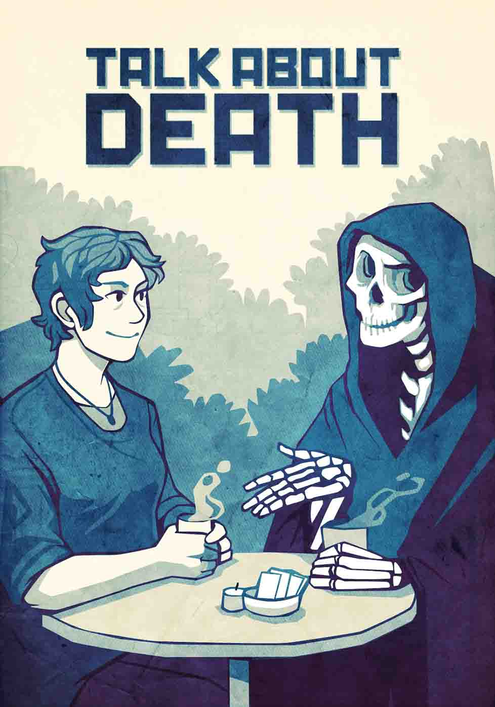

Humans of all ages deserve a good quality of life and good quality of death. Bringing the subject into the open is a first step.
Talk to your loved ones about your specific wishes for your final days. Make a living will, a legal document that formulates your preferences for prolonged medical treatments.
Consider the well-being of your survivors: make a will that legally provides how your property will be distributed after death and, if relevant, names a guardian for your children.
Doctors can have a conversation with patients, no matter their age or health level, about options for their final days that might include long-term care, palliative services, and, in cases of terminal illness, hospice.
